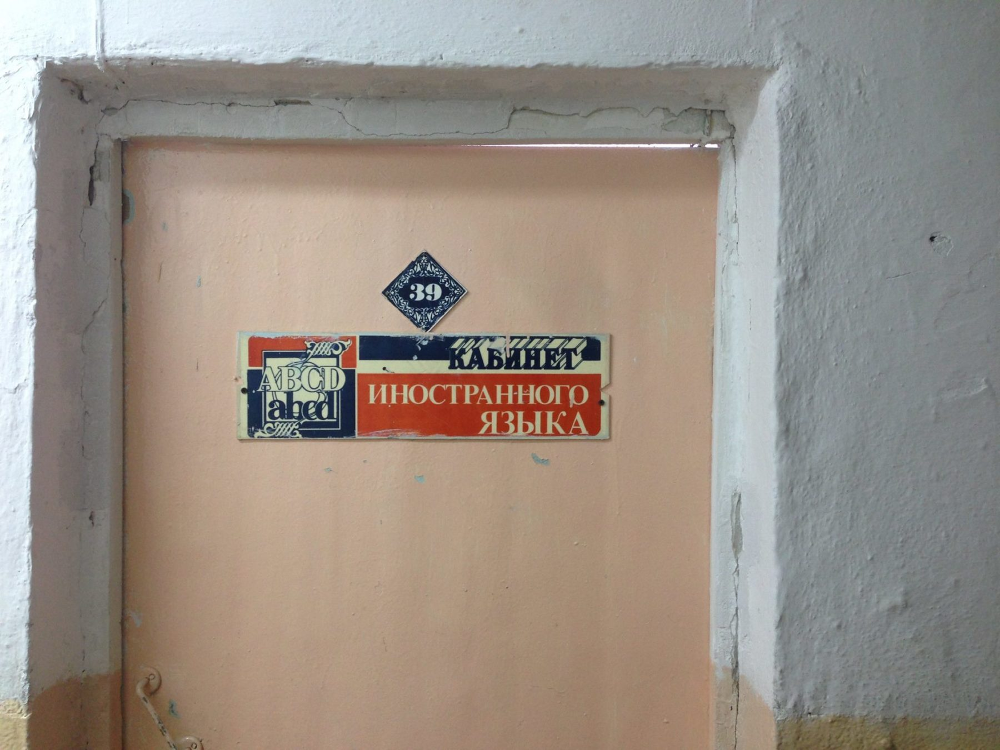

Ай вонт ту райт фром май харт.
Среди себя я известен как человек, которому учительница английского в школе однажды сказала: «Максим, на фоне общего болота я поставлю тебе 5». Эта фраза стала моим своеобразным кредо. На фоне общего болота.
Сегодня по грустному поводу посетил свою бывшую школу. Не был в ней больше 20 лет! Я, сука, пожилой! Рекреации помельчали, коридоры потемнели, лестницы и преподаватели как бы ссутулились.
Расширилась только дверь в туалет «нам пришлось переделать её по программе «Доступная среда», правда у нас нет учащихся-инвалидов». Да, вот ещё. Появился новый кабинет английского.

Кстати, школьников из деревень школьный автобус не возит уже неделю в школу. Потому что нет денег на бензин.